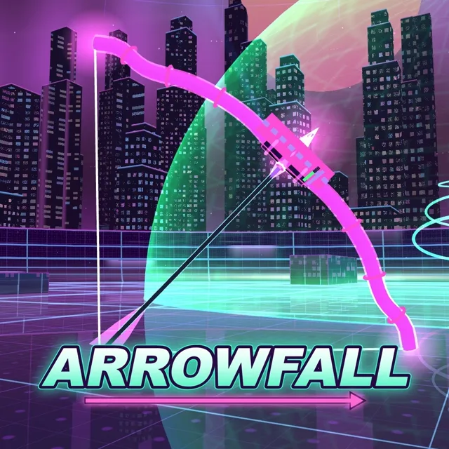
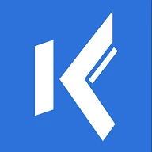
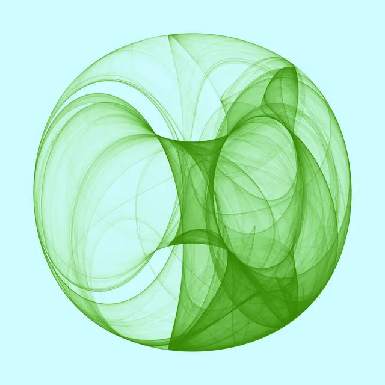

Skills
Backend and APIs
PHP 8 with Symfony 7, Laravel and CakePHP: SaaS platform cores, REST APIs, business logic and database schema design on MySQL.
Integrations
Payment systems and third-party APIs, real-time TCP data streams from IoT devices, RSS ingestion, and LLM features built on internal knowledge bases.
Legacy and performance
Refactoring legacy pages and codebases, framework upgrades across major versions, and query and index work on million-row tables.
DevOps
Docker rollouts for local development and deployment, CI/CD pipelines (TeamCity, Bitbucket), web servers and delivery networks.
Quality
Unit tests for every feature (PHPUnit), static analysis (PHPStan), end-to-end tests and code review.
Frontend
Complex JavaScript interfaces, React and Vue, and responsive UI modernisation.
Backend
Frontend
Testing
DevOps & tools
Also
Experience
Full-Stack Web Developer
Core development and maintenance of the Trustindex platform, mainly on Symfony 7.
- 3rd-party integrations: integrations with external payment systems to automate review-invitation workflows.
- Performance: refactored legacy category pages for faster page loads and easier maintenance.
- Containerization: led the first Docker phase to standardize local development and deployments.
- Quality: unit tests for all new features and developments.
- UI: modified and modernized user interfaces across the platform.
Full-Stack Web Developer
An acoustics design SaaS, built with a team of acousticians, mathematicians and researchers.
- Browser downloader: replaced the Electron (rsync-based) desktop downloader with a downloader that runs entirely in the browser, handling 10 GB acoustic room files.
- Core features: complex user interfaces for acoustic modelling and analysis.
- DevOps: Docker containers for machine-learning algorithms to speed up R&D; automated deployment pipelines in TeamCity.
- E-commerce: maintained and developed a Laravel web store with a CMS, custom pricing and mobile-friendly UI.
- LLM integration: automated ticket notes generated from internal knowledge bases.
- Infrastructure: configured and monitored web servers and file delivery networks with the sysadmins.
Full-Stack Web Developer
Developed, maintained and optimized business-critical PHP applications and data pipelines.
- Stadium VIP system: VIP seating management and ticket generation.
- IoT data: a TCP stream-handling PHP application that processes and stores real-time data from agricultural IoT devices.
- Database design: a scalable schema for employer evaluations on Profession.hu.
- Clients: direct contact with clients and partners to keep solutions aligned with business needs.
Side projects

ARROWFALL ↗
A VR archery roguelite for Meta Quest, live on the Meta Horizon Store with online co-op and an in-app purchase. I took it from idea to store as product owner, building it with an AI coding agent.
- Defined every feature and decided when it was done, from game design to multiplayer
- Took it through Meta's store review: listing, in-app purchase, privacy policy and data-use checkup
- Held the quality bar with 488 automated tests and a headset playtest of every build

kommenter.hu ↗
Hungarian community news reader, running since 2016 and recently modernized and relaunched: news from 50+ sources grouped into stories, with comments and votes.
- Articles about the same event from different outlets grouped into one story with one comment thread
- Threaded comments with markdown and images, votes, following and notifications
- Personal "For you" feed from chosen topics, detailed search, reader submissions and a weekly newsletter

attractor.fashion ↗
Print-on-demand shop for strange-attractor art: chaos maths turned into posters, tees and hoodies. Built on a custom WooCommerce theme, not open for orders yet.
- A collection of 2,360 generated designs, searchable by name or number and filterable by equation family
- Posters, tees, hoodies and sweatshirts, each printed to order through the Printify API
- Any design orderable as a poster, with an email list for new designs
Education
Studies through the specialisation stage; no degree